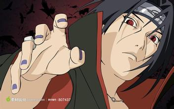

我的名字是旗木卡卡西，喜欢的东西和不喜欢的东西……不想告诉你们，将来的梦想嘛……兴趣也是多种多样的…….!!!!!!!!!!!
忍者要沉着冷静、仔细判断！打破忍者世界规则的人，我们都叫他废物。……可是，不懂得重视同伴的人，是最最差劲的废物！
你和我有着相同的梦想，都希望实现和平。你和我没有任何区别，都是为了正义而活。我对你的村 子实行的正义，和你试图击倒我的想法没有任何的区别。失去真正重要的东西所带来的痛楚，对谁 来说都是一样，你和我都对这样的痛楚感同身受
这个世上不会事事如你所愿，活得越久…越是能体会现实里只充斥着无奈痛苦以及空虚…听好…世间万物…有光的地方必定有阴影，若有胜者这一概念，必定同时存在着败者。若心生维持和平这种自私的想法，就会挑起战争。若想守护，爱必会衍生出恨，他们彼此之间存在着因果关系，无法被分离，这就是现实…

人的命运到底是沉浮在像云一样已经决定好的潮流之中，还是能够跟随着自己所选择的潮流走的东西呢？不管选择哪条路，最后可能都会走到同样的终点。但是当选择了后者时，人们就可以努力地为活着的目的努力，而拥有这种想法的人才是真正的强者。

你没有被杀的价值，我愚蠢的弟弟啊，想要杀死我的话，你就憎恨我、仇恨我，然后苟且偷生地活下去吧，逃避着逃避着，紧抱着生命就好，然后，等你带着和我同样的眼睛时再来到我面前，到了那个时候，你的存在才有意义。